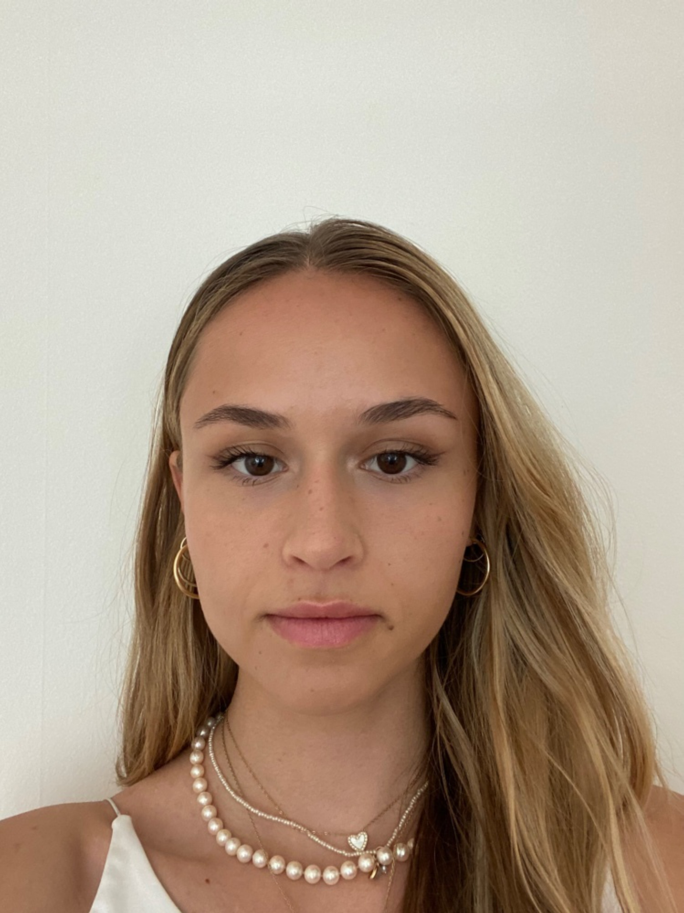

OncoPrediction intègre des modèles d'apprentissage automatique pour estimer la survie individuelle des patients atteints de cancers gastro-œsophagiens — un outil d'aide à la décision conçu pour les Tumor Boards.
Les cancers gastro-œsophagiens figurent parmi les pathologies digestives les plus létales. Les Tumor Boards font face à des décisions thérapeutiques complexes dans un contexte d'incertitude pronostique souvent sous-outillée.
Les outils pronostiques actuels reposent principalement sur le stade TNM, sans intégrer la richesse des données moléculaires disponibles dans chaque dossier patient.
Charge mutationnelle (TMB), instabilité microsatellitaire, données histologiques — ces variables offrent un potentiel pronostique considérable encore sous-utilisé.
Les modèles d'apprentissage automatique permettent d'intégrer simultanément des dizaines de variables et de produire une estimation individualisée du pronostic.
À partir de six paramètres cliniques et génomiques immédiatement disponibles, OncoPrediction génère des courbes de survie individualisées et un score de risque interprétable pour chaque patient présenté en Tumor Board.
Développé selon les standards de la recherche en biostatistique, OncoPrediction s'appuie sur des données publiques validées et des méthodes éprouvées en analyse de survie.
617 patients issus de la base TCGA via cBioPortal — cancers gastro-œsophagiens (440 estomac, 177 œsophage). Données publiques, anonymisées, de référence internationale.
617 patients · TCGA · cBioPortalStandardisation des stades TNM, imputation des valeurs manquantes (médiane / mode), élimination des variables non informatives. Résultat : 20 variables, 0 valeur manquante.
20 variables · 0 valeur manquanteEstimation des courbes de survie globale et par sous-groupes (stade AJCC, grade, statut métastatique). Survie médiane de 28,7 mois. Tests log-rank significatifs pour tous les sous-groupes.
Survie médiane 28,7 moisModèle raffiné sur 6 variables indépendantes : âge, grade, stade III, stade IV, radiothérapie et charge mutationnelle (TMB). Retenu comme meilleur modèle sur ce jeu de données.
C-index = 0,665 · Meilleur modèleModèle non-paramétrique entraîné sur 44 variables après encodage. 200 arbres, validation croisée 5-fold. Utilisé en complément pour la visualisation des courbes individuelles.
RSF · 200 arbres · CV 5-foldÉvaluation sur un jeu de test indépendant de 124 patients via C-index et Integrated Brier Score. Le modèle de Cox surpasse le RSF sur cette cohorte.
Cox > RSF · IBS = 0,141Chaque année en Suisse, environ 1 700 patients sont diagnostiqués avec un cancer gastrique ou œsophagien (Ligue suisse contre le cancer). Chacun de ces patients est discuté en tumor board multidisciplinaire. OncoPrediction vise à enrichir ces discussions en fournissant une estimation individualisée du pronostic, basée sur les données cliniques et génomiques du patient.
À ce jour, aucun outil d'aide à la décision intégrant simultanément données cliniques et moléculaires n'est disponible pour les tumor boards en oncologie digestive en Suisse.

OncoPrediction est né d'un constat de terrain : les données disponibles dans chaque dossier oncologique — stade tumoral, charge mutationnelle, données histologiques — recèlent un potentiel pronostique considérable, encore rarement intégré de façon systématique dans la prise de décision clinique.
Ce projet démontre qu'une clinicienne, forte de son expertise médicale et des ressources numériques actuelles, peut construire un outil d'aide à la décision fondé sur des méthodes d'apprentissage automatique validées. L'expertise clinique et la data science ne sont pas des mondes opposés — ils sont complémentaires.
« La plus grande opportunité offerte par l'IA n'est pas de réduire les erreurs ou la charge de travail : c'est de restaurer le lien précieux entre patients et médecins. »— Eric Topol, Deep Medicine (Basic Books, 2019)
OncoPrediction est un premier pas vers cette vision : un outil de soutien aux Tumor Boards pour une prise en charge plus précise et plus personnalisée de chaque patient. Ce projet ambitionne de poser les bases d'un développement futur, avec le soutien de partenaires académiques et institutionnels.
Statut du projet : OncoPrediction est un prototype de recherche développé dans le cadre d'un mémoire de master à l'Université de Genève. Il est mis à disposition à des fins de démonstration académique et n'est pas destiné à un usage clinique direct.
Validation sur données TCGA (n=617). Développement de l'application web. Mémoire de master, Faculté de Médecine, Université de Genève.
Validation rétrospective sur données hospitalières (HUG), en collaboration avec le Service de chirurgie digestive. Évaluation de la performance des modèles sur une cohorte locale.
Étude prospective en tumor board. Intégration au flux clinique hospitalier. Développement soutenu par une bourse de recherche pour un déploiement à l'échelle des hôpitaux suisses.
Accédez à l'interface de démonstration, saisissez les paramètres cliniques d'un patient et visualisez en temps réel les courbes de survie prédites par les deux modèles.
Lancer l'application →Projet développé au sein de la Faculté de Médecine de l'Université de Genève, en collaboration avec le Service de chirurgie digestive des Hôpitaux Universitaires de Genève (HUG).